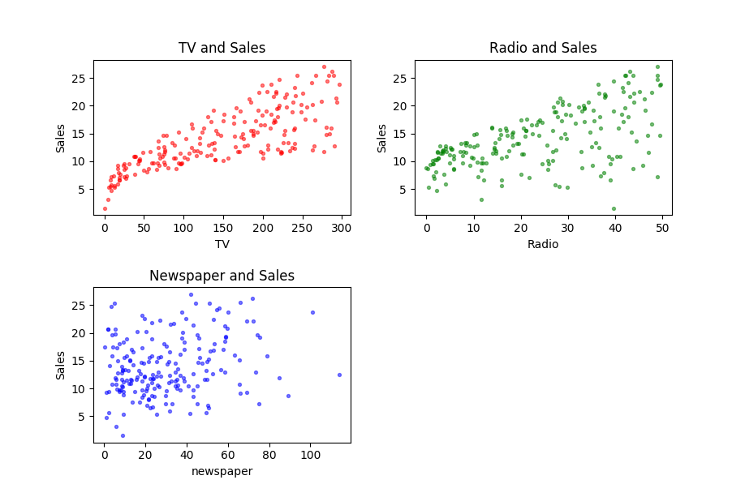

Introduction to Linear Regression
Keywords: linear regression
What is Linear Regression
Linear regression is a basic idea in statistical or machine learning, especially in supervises learning. The linear regression is a statistical model whose structure is based on the linear combination, and it is usually used to predict some quantitative responses to some inputs(predictors).
An Example
This example is taken from ISL(James2013)[1], It is about the sale between different kinds of advertisements. I downloaded the data set from http://faculty.marshall.usc.edu/gareth-james/ISL/data.html. It’s a CSV file, including 200 rows.
Here I draw 3 pictures using ‘matplotlib’ to make the data more visible. They are ‘TV’,‘Radio’,‘Newspaper’ to ‘Sales’ respectively.

From these figures, we can find TV and Sales looks like having a stronger relationship than radio and sales. However, the Newspaper and Sales looks like independent.
This naive example is too simple for it has only 3 predictors, but in the real task, it contains more than 3. So, it would be a bad idea to check all their relations by visualizing them in pictures, which may also have several gigabyte data that can not show on a single screen. Then to solve this problem, we should take the statistical methods to investigate the relation in the data and predict what the responses are to a certain predictor.
“Linear”
Linear is a property of the operation , who have these two properties:
where is a constant. Then we say is linear.
All the operations that have the properties above can be called linear, and all linear operation can be represented by a matrix. And if a linear operation can be drawn in a 2-D or 3-D space, it is a line or a plane. In higher dimensions more than 3, it is called a hyperplane. Maybe that why it is named linear, I guess.
“Regression”
In statistical or machine learning, regression is a crucial part of the whole field. However, the other part is the classification. If we took a view of the output data type, the distinction between them would be more notable. That is the output of regression is continuous on the real number line, while the output of classification is discrete.
Machine Learning and Statistical Learning
Machine learning and statistical learning are similar but have some distinctions. In machine learning, regression and classification are always used to predict the output of the new incoming input. In contrast, Statistical learning, use regression and classification to model the data and find the inner and hidden relations among the huge records. In a word, the model of data, no matter it is regression or classification or what else, is used to analyze the mechanism behind the data.
What is linear regression
Linear regression is a regression model, and the operation of the total parameters are linear, like:
where the where are the parameters of the model, the can be written as (or when the output is vector). And is linear:
where is a constant, and has the same dimensions with
Q.E.D
There is also a kind of idea that the linear property is not just for but also for which are the input. In the first view,
is a case of linear regression problem. But from the second point of view, it doesn’t. However, this is not a unsolvable contradiction. If we use:
to replace the and in equation (3), we get again:
a linear operation, where .
The step, equation(4), is called feature extraction, is called features, and both and is called basis function
Why Linear Regression
Linear regression has been used more than 200 years or even more, but why it’s always being our first class of statistical learning or machine learning? Here we got 3 practical elements of linear regression, which is essential for the whole subject:
- It is still working in some areas, even though a more complicated model has been built, it could not be replaced totally.
- It is a good jump-off point to the other feasible, adorable models, for who may be an extension or generation of naive linear regression
- Linear regression is easy, so it is possible to be analyzed through mathematics.
This is why linear regression is always our first class to learn models. And by now, this works pretty well.
Some Questions of the Example
Back to our example above, our goal is to solve the problem which is how to get more sales with less budget of advertisement. If the linear regression were used, the following questions([1:1]) would be confirmed firstly:
- Is there a relationship between the budget and sales
- Is the relationship strong? And how strong it is.
- Among the media, which contribute to sales?
- How accurate can we estimate question 3?
- How accuracy can we predict future sales?
- Is the relationship linear?
- Is there synergy among the media?
After these 7 questions being answered, the problem is almost solved. And in the following blog posts, linear regression will give us all the answers.
A Probabilistic View
Machine learning or statistical learning can be solved from two different views - Bayesian and Frequentist. They both worked well for some different instances, but they also have their limitations. The Bayesian view of the linear regression will be talked about as well.
Bayesian statisticians thought the input , the output and the parameter are all random variables, while the frequentist does not think so. Bayesian statisticians predict the unknown input by calculating the , and then sampling from the random variable with the distribution . To achieve this goal, we must build the at first, that is the modeling progress, or we can call it learning progress.